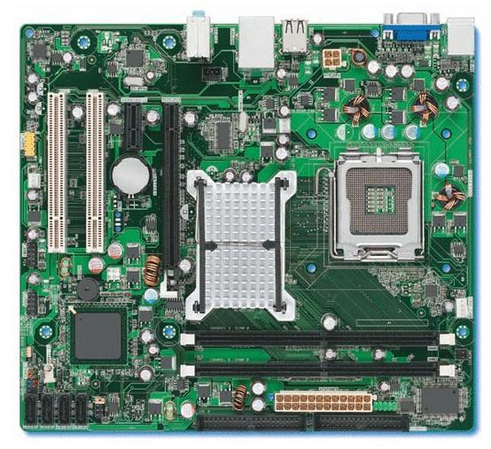
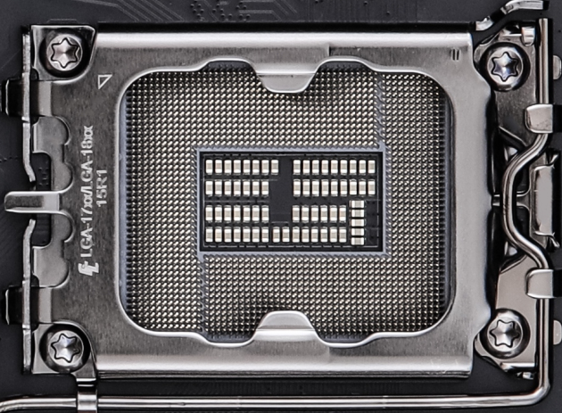
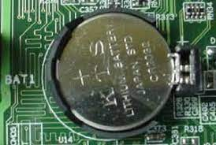

Questão 1.Identifique e explique todos os conectores externos frontal e traseiro do computador.
Resposta:Questão 2.Quais os tipos de conectores de áudio, vídeo, rede, antena wi-fi e bluetooth?
Questão 3.Quais os tipos de conectores para unidade de armazenamento interna?
Resposta: São os conectores SATA e ATA.Questão 1.Defina "placa-mãe."
Resposta: Placa mãe é um sistema que une todos os componentes do PCQuestão 2.Diferencie placas mãe on-board e off-board.
Resposta: Placa mãe on-board é aquela que vem com todos os seus componentes já integrados, não sendo necessário comprar periféricos separadamente. Já a off-board é a que vem sem esses componentes, sendo necessário que o usuário tenha que adquiri-las separadamente.Questão 3.Na placa mãe temos alguns eletrônicos, sendo: MOSFET e Transistors. (quantos tem em um processador?) e os capacitores e resistores. Comente cada um deles e suas variações.
Questão 4.Placas mãe mais antigas possuíam 2 Chipset (ponte norte e ponte sul). Defina e dê suas funções.
Resposta: O chipset é um componente alocado em duas posições, ponte norte e ponte sul,e que serve para que todos os componentes do computador desde o disco rígido até o processador, troquem informações e realizem as tarefas que desejamos.O de ponte norte é responsável pelos componentes mais rápidos do pc, como processador e ram, enquanto o norte é responsável pelos mais lentos como de entrada e saída como mouse e teclado (ps2)Questão 5.Para a placa mãe funcionar é necessário o fornecimento de energia. Comente sobre todos os tipos destes conectores e suas devidas voltagens.
Resposta: Antigamente usado, o padrão AT de fornecimento de energia foi substituído pelo padrão ATX, com capacidade de fornecer tensão de 3,3V.Questão 6.Quais os diversos tipos de placa mãe?
Resposta: São as placas-mãe ATX, MICRO ATX, NANO ITX e Pico ATX.Questão 1.Defina os diversos tipos de memória: RAM, DDR 1 ao 5 e associe com qual processador é utilizado.
Questão 2.Quais os diversos tipos de armazenamento de dados que você conhece? Explique-os.
Resposta: HD’s e SSD’s, como exemplo de hd um pen drive(mas com menor capacidade), ou o próprio disco rígido que é um componente que guarda todos os dados e informações digitais do seu pc , e o ssd, que funciona como em cartão sd maior e muito mais rápido. Armazenamento primário (RAM), memória que guarda os dados de forma temporária. Armazenamento em nuvem, que é um hd fora da sua maquina em que se armazena dados nele por meio da internet, essse processo é possível graças ao servidor correspondente, que pode estar no país que se reside ou não, no qual recebe todos os arquivos armazenados em nuvem.Questão 1.O que é processador?
Resposta:O processador é o responsável por receber todos os dados do computador e processá-los em informações, redistribuindo-as e mandando essas informações para a saída de dados.Questão 2.O processador é colocado em um conector específico chamado SOCKET. Comente sobre sua função, modelos e processador que pode conectar.
Resposta:O socket nada mais é do que o localQuestão 3.Qual a estrutura interna do processador, ou seja, seus componentes? Explique cada um deles.
Resposta:Os componentes de um processador são:Questão 4.Elabore uma tabela comparativa entre os processadores Intel e AMD, a partir do Dual Core.
| Intel | AMD |
| Processador Intel® Core™ i9-12900HX Nº de núcleos: 16 Frequência: 5.00 GHz Cache: 30 MB Intel® Smart Cach Processadores graficos: Gráficos Intel® UHD para processadores Intel® da 12ª Geração Nº de threads: 24 |
Processador AMD RYZEN 9 5900X Frequência: 3.70 GHz Cache: 64 MB Nº Núcleos: 12 Nº de threads: 24 |
| Processador Intel® Core™ i7-12850HX Nº de núcleos: 16 Frequência: 4.80 GHz Cache: 25 MB Intel® Smart Cache Processadores gráfico: Gráficos Intel® UHD para processadores Intel® da 12ª Geração Nº de threads:24 |
Processador AMD Ryzen 7 5800X Frequência:4.7GHz Cachê: 32MB Nº de Núcleos: 8 N° de Threads: 16 |
| Processador Intel® Core™ i5-12600HX Nº deNúcleos: 12 Frequência: 4.60 GHz Cache: 18 MB Intel® Smart Cache Processadores gráficos: Gráficos Intel® UHD para processadores Intel® da 12ª Geração Nº de threads: 16 |
Processador AMD Ryzen 5 5600X Frequência : 4.6GHz Cachê: 32MB Nº de Núcleos: 6 N° de Threads: 12 |
| Processador Intel® Core™ i3-1220PE Nº de nucloes: 8 Frequência: 4.20 GHz Cache: 12 MB Intel® Smart Cache Processadores gráficos:Gráficos Intel® UHD para processadores Intel® da 12ª Geração Nº threads: 12 |
Processador AMD Ryzen 3 3300X Frequência: 4,3 GHz Cache: 16MB Nº de Núcleos: 4 Nº de Threads: 8 |
Questão 1.Comente sobre SETUP.
Resposta:Setup é uma configuração de instalação para executar programas, mas também pode ser a configuração que permite o usuário a alterar determinadas opções em um programa conforme suas necessidades.Questão 2.Comente sobre CMOS.
Resposta:CMOS significa “Complementary Metal Oxide Semicondutor”, e serve como bateria para alimentar a BIOS, e que armazena as configurações da mesma.Questão 3.Defina Barramento e seus 3 tipos
Resposta:Barramento é o que conecta todos os componentes do computador a placa mãe. Seus três tipos são: comunicação de dados: função de transporte dos dados. comunicação de endereços: função de indicar endereço de memória dos dados que o processador deve retirar ou enviar, comunicação de controle: função que controla as ações dos barramentos anteriores.Questão 4.Comente sobre BIOS.
Resposta:A BIOS (Basic Input/Output System) é o sistema básico de entrada e saída responsável por executar todas as tarefas do computador ao iniciar, como o sistema operacional, além do reconhecimento dos hardwares instalados e a verificação da data e hora no sistema do computador, a partir do momento que ele é ligado.Questão 5.Qual a função da bateria de Litium?
Resposta:A função da bateria de lítio é fazer a manutenção do relógio da máquina, verificada pela BIOS, eQuestão 6.O que é slot de expansão? Dê seus tipos e comente cada um brevemente.
Resposta:Os slots de expansão servem para adicionar recursos a placa mãe. Seus tipos são:Questão 7.Qual a função do Cooler e Dissipador de Calor?
Resposta:A função deles é absorver o calor naturalmente originado pelas máquinas durante seu processamento e funcionamento, impedindo-as de superaquecer.Questão 8.Por que devemos colocar pasta térmica entre o processador e dissipador?
Resposta:Porque sem esse componente, o processador se aqueceria até deixar a máquina inutilizável. Ou, na maioria dos modelos, desligar sozinho, passando por uma perda de dados.